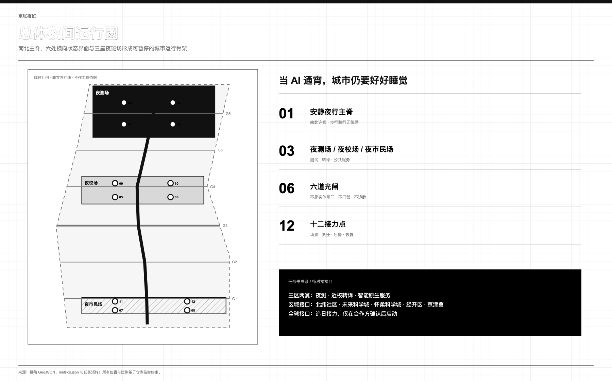
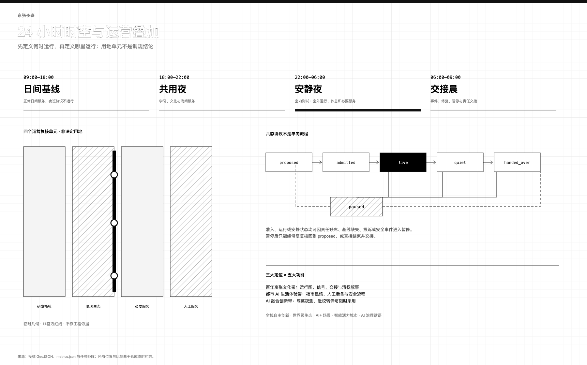
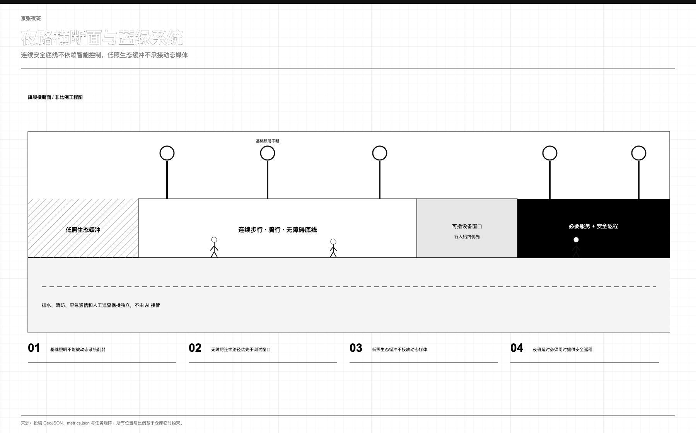
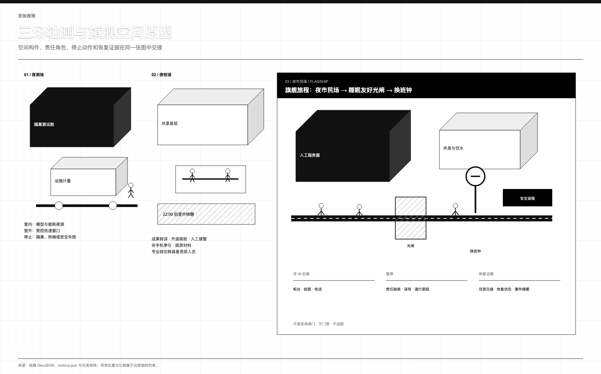
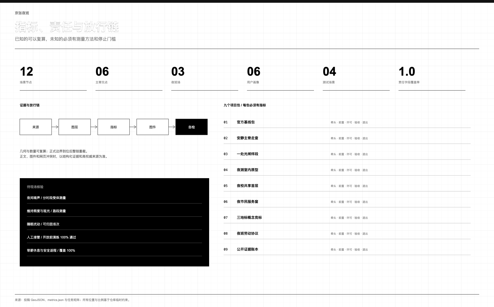

京张夜班 / JINGZHANG NIGHT SHIFT：当 AI 通宵，城市仍要好好睡觉
以一条安静夜行主脊、三座夜班场、六道光闸和十二个接力节点，把夜间研发、公共服务、暗夜生态与夜班劳动保障纳入可暂停、可恢复、可交接的城市运行协议。
当 AI 通宵，城市仍要好好睡觉。 模型可以夜测，跨时区团队可以接力，晚归者仍能获得帮助；但未落实夜间休息保障、带薪休息、安全返程和拒绝不安全任务机制的运营，不得启动。
设计依据与资料清单
正式公告和智能体任务书界定任务，仓库来源登记表界定资料用途 来源 来源 来源。
城市设计、详细规划和用地分类资料建立空间审查边界 标准 标准 标准。无障碍与生成式 AI 资料建立服务审查边界，不等于已经满足审批或专业标准 标准 标准。
总体范围和三处重点区均来自仓库临时多边形，只能支持概念生成、拓扑检查与面积复算，不能证明红线、权属、现状或工程可行性 空间数据 空间数据 [assumption:A-BOUNDARY-001]。大钟寺临时位置存在公开疑问；取得官方多边形后必须重裁全部图层并以 EPSG:4548 重算。
现阶段没有清权的夜间噪声、照明、睡眠干扰、交通、生态、无障碍和劳动条件基线 [assumption:A-NIGHT-BASELINE-001]。因此本方案给出调查方法、空间原型、责任角色和停止门槛，不编造合规数值 深度。

三层范围工作框架
约 43.6 平方公里统筹研究范围研究跨区域协同；约 11.4 平方公里临时总体范围研究夜间活动与安静如何共存；三处重点区把原型落实到可暂停、可恢复、可审计的空间旅程 标准 深度。
| 层级 | 核心问题 | 设计回应 | 验收证据 |
|---|---|---|---|
| 统筹研究 | 研发、人才、服务如何跨时区接力 | 七案例、三区两翼、外部协同接口 | 来源、转译边界、年度账本 |
| 总体设计 | 活跃夜与安静夜如何共存 | 一脊、三场、六闸 | 道路、用地叠加、蓝绿与运营规则 |
| 重点区域 | 原型如何进入真实街区 | 夜测场、夜校场、夜市民场 | 责任、停止、后备服务、恢复证据 |
一脊、三场、六闸、十二点构成空间语法。一脊是沿临时走廊南北连续的步行、骑行与无障碍路径 空间数据；三场分别承接受控夜测、近校转译和夜间公共服务 空间数据；六道光闸与主脊真实相交，是照明、导视和运营状态转换界面，不是实体闸门、门禁、人员追踪或公共空间封闭设施 指标；十二点把场景、场地、责任和退出规则连接起来 指标。
四个完整覆盖单元仅是临时夜间运营复核叠加层，overlay_role 为概念运营审查，statutory_use 明确禁止法定使用；它不提出调规 空间数据 深度。

统筹研究范围产业与未来城市研究
方案逐项回应三大定位：以可核验的铁路交接制度承接百年京张文化带，以有人工后备的夜间服务承接都市 AI 生活体验带，以“夜测—转译—采用”承接AI 融合创新带。五大功能被分解为可执行任务：众智园承接 AI 全栈自主创新体系与治理测试，AI 原点社区承接世界级 AI 创新生态，小月河翼承接 AI+ 场景赋能新范式，夜间公共服务验证智能化 AI 活力城市，公开证据账本和可暂停协议形成 AI 治理全球话语权的具体议题 来源。
三区两翼不是三块孤岛。众智园做隔离夜测、端侧能耗与安全复盘；AI 原点社区做近校知识转译、开源夜校和成果服务；大钟寺做智能终端、智能体和晚归公共服务。中关村科技服务翼提供法务、算力、知识产权与人才的待对接接口，小月河场景赋能翼提供居民反馈、生态观察和低速测试接口 深度。
北纬社区、未来科学城、怀柔科学城、经开区及京津冀协同均只列为拟对接接口：分别讨论社区共评、跨区科研接力、科学装置需求转译、应用场景互认和区域安全返程；没有任何既有合作、资金或机构承诺。
七个案例只提取机制，不照搬指标 [assumption:A-CASE-TRANSFER-001]：
| 案例 | 可借鉴机制 | 京张转译 | 不照搬 |
|---|---|---|---|
| 首尔 Owl Bus | 夜间需求组织交通 | 换班后的安全返程接口 | 路线、客流、绩效 来源 |
| Helsinki Kalasatama | 用居民日常收益检验创新 | 睡眠干扰、等待与接管审查 | 海外目标值 来源 |
| Marineterrein | 小步、可逆的真实环境试验 | 限时夜测与恢复回执 | 场地治理制度 来源 |
| AI Verify Foundation | 共享测试与治理工具 | 开放夜测清单与第三方复核 | 认证背书 来源 |
| Mila | 研究、人才与负责任 AI 社区 | 夜校、导师轮值、公开问题单 | 组织和资金机制 来源 |
| Knowledge Quarter London | 机构围绕共同议题协作 | 高校、医院、企业、社区夜间议程 | 成员数量等同质量 来源 |
| Paris-Saclay | 研究到企业的空间服务链 | 夜测—转译—采用接力 | 强度和招商承诺 来源 |
产业闭环为“问题单—隔离测试—人工评审—公开摘要—限时试用—晨间交接”。只有通过数据最小化、劳动安排、环境基线和退出演练的项目才可进入夜间窗口；这是建议性准入协议，不是既定政策。
总体设计范围城市更新与控规深度城市设计
空间先按时间运行：09:00–18:00 为日间基线，夜班叠加层关闭；18:00–22:00 为共用夜；22:00–06:00 为安静夜，研发转入室内，户外只保留通行、休息与必要服务；06:00–09:00 为交接晨，公布事件、暂停与恢复。
六态协议不是单向流程：proposed → admitted → live ↔ quiet → handed_over；admitted、live、quiet 均可进入 paused，修复后回到 proposed 重新审查，或直接 handed_over 结束交接。缺少人工责任、非 AI 后备、停机动作或恢复证据时不得进入 live 指标。
总体策略是东西缝合、南北贯通，但当前只证明概念拓扑。四个用地单元保持无缝、无重叠的完整覆盖，叠加科研、生态、商业和社区的夜间规则；法定用途、容积率、高度、密度和退线保持未知 指标 深度。更新顺序为保留、修缮、性能改善、可逆加建、待定；没有结构、消防、文保、权属和使用调查时不提出拆除 深度。
用地、建筑规模与拆改留方案
四个机器可读用地单元只用于检查夜间运营是否覆盖全场地：科研单元允许受控室内夜测，绿地单元进入低照生态模式，商业服务单元 22:00 后收缩到必要服务，社区服务单元保留人工柜台与休息 空间数据。取得正式用地、权属和现状资料后，专业团队逐单元核对兼容性。
六个小型建筑基底只是复核门厅、厕所饮水、设备隔离、值班休息和无障碍回转的概念占位，不是现状建筑或批准规模 空间数据 指标 [assumption:A-PROGRAM-001]。容积率、总建筑规模及拆改留结论不得由这些占位反推 [assumption:A-CONTROLS-001]。
交通、轨道、市政与公共服务设施
约 9.45 公里的临时概念主脊贯通南北，六处东西联络均与其相交 指标 指标。主脊优先步行、骑行和无障碍；低速设备只可在限时、有人值守、可立即撤车的窗口测试。轨道接驳、道路红线、停车、桥隧和站城工程均待正式现状与专项论证。
市政和新型基础设施采用“小节点、可隔离、可计量、可退出”：设备先在室内记录功耗、散热、声响、网络和维护责任；自动控制不得替代基础照明、消防、应急通信或人工巡查 深度。公共服务底线是厕所、饮水、座椅、休息、人工服务窗、纸图与安全返程信息；AI 健康、导览和多语服务只辅助导航，专业判断立即转人工 标准 标准。
蓝绿空间、公共空间与城市风貌
低照生态边界把黑暗时间当作基础设施，不布置蓝光富集景观灯、动态广告或持续声景；照度、色温、声级和生态时段必须实测后确定 空间数据 [assumption:A-NIGHT-BASELINE-001]。公共空间在共用夜容纳学习文化，在安静夜收缩到通行休息，在交接晨公开恢复状态 空间数据。
风貌取自铁路运行纪律，而非霓虹意象：低位刻度、细线导视、可见的值班与熄灯状态。光闸只改变光环境、导视和运营提示，不阻断公众；基础安全照明和连续无障碍路径始终保留 深度。

重点区域详细设计
三处临时重点区只表明任务角色，不证明真实地块位置 空间数据 [assumption:A-BOUNDARY-001] 深度。
夜测场 / Night Test Yard。 对应众智园，承接受控模型红队、端侧能耗与低速设备夜测。室内设隔离设备位和人工安全桌，户外只放可撤构件；敏感数据、不可解释告警、热噪外溢或责任人缺席立即停机。
夜校场 / Night School Yard。 对应 AI 原点社区，承担近校转译、成果服务、开源夜校与人工接管培训。共享首层不以实名画像、手机或推荐算法为入口；22:00 后室外结束，室内转低声。
夜市民场 / Night Civic Yard。 对应大钟寺，承担智能终端、智能体和夜间公共服务。站点四象限、接驳流线和地块改造须取得正式站点、道路、权属与客流资料后深化，本轮不作工程结论。
旗舰旅程把夜市民场 + 睡眠友好光闸 + 换班钟连成一条可核验路径：晚归者从连续无障碍路径到人工值守服务窗，沿途依次可找到纸面导视、厕所饮水、安静休息和安全返程信息；低照生态边界与活动带分开。输出错误、通行受阻、人员缺席或劳动保障未落实时，换班钟显示暂停，AI 入口关闭而人工基础服务保留；清晨由日夜班双签恢复回执后才可重开。
三处责任地标是：换班钟显示责任、安静时段和暂停；暗夜信号园呈现主动熄灯的生态价值；开源夜库保存模型卡、限制、事件摘要与修复版本。它们均需无障碍、文保、结构、消防和运营复核，不做巨构 指标。

AI 创新生态、人才画像与 AI+ 场景
六类用户用于检验服务底线：研究人员需要隔离测试；初创团队需要合规与算力导航；学生和全球协作者需要可负担夜校；晚归居民需要安静、安全与人工帮助；夜班劳动者需要带薪休息、安全返程和拒绝不安全任务；老年、残障及无智能手机访客需要纸面信息与连续无障碍路径 指标。
这些 AI 场景把模型、智能体和机器人能力分别绑定到产业测试、社区公共服务、慢行交通和文化导览；只采最小数据，由明确责任人复核，不做无法人工接管的自动治理。
| ID | 场景 / 场地 | 责任角色 | 停止条件与恢复证据 | 非 AI 后备 |
|---|---|---|---|---|
| NS-01 | 静默模型红队【测试】/ 夜测场 | AI 安全负责人 | 敏感数据或隔离失效；断网封存并签恢复单 | 人工测试脚本 |
| NS-02 | 端侧能耗夜测【测试】/ 夜测场 | 设施与能耗负责人 | 热、功耗、声响越界；停机降载后复测 | 独立仪表与纸记 |
| NS-03 | 低速物流窗口【测试】/ 夜测场 | 现场安全员 | 不让行、近失、阻路；撤车并关闭窗口 | 人工推车 |
| NS-04 | 睡眠友好照明【测试】/ 夜测场 | 照明与社区复核组 | 眩光、投诉、削弱基线；恢复原状复核 | 基础照明与巡查 |
| NS-05 | 夜校协作桌 / 夜校场 | 课程主持 | 骚扰、超员、外溢；结束清场并登记 | 白板与纸质讲义 |
| NS-06 | 人工接管站 / 夜校场 | 当班主管 | 人员缺席或演练失败；关闭 AI 并复演 | 柜台、电话、纸表 |
| NS-07 | 夜间健康导航 / 夜市民场 | 具资质服务人员 | 诊断、急症或误导；转人工并留事件单 | 人工问询与急救转介 |
| NS-08 | 多语抵达台 / 夜市民场 | 站务/多语人员 | 路线错误；下线内容并更新纸图 | 双语纸图与指路 |
| NS-09 | 无障碍夜路 / 主脊/夜校场 | 无障碍审查员 | 路径阻断；关停场景、清障复核 | 物理导视与陪行 |
| NS-10 | 清权铁路声景 / 夜校场 | 策展与权利复核人 | 权利不明或扰民；静音下架并清权 | 文字与触摸模型 |
| NS-11 | 夜班劳动者驿站 / 夜市民场 | 劳动者代表与运营方 | 休息、返程、替班缺失；停延时运营 | 人工休息室与纸班表 |
| NS-12 | 晨间交接公示 / 夜市民场 | 日夜班共同责任人 | 记录不全；不续开并补齐双签 | 纸面交接簿 |
十二张卡均补齐所属场地、责任角色、停止条件、恢复证据和非 AI 后备；其中四张测试卡保持 concept_only，不代表获批 指标 指标 指标。AI 不替代医疗、法律、规划、安全或运营人员的最终判断。
文化叙事、品牌系统与长期运营
“京张夜班”取自铁路运行图、信号、值班、交接和故障记录。标志以平行轨道、横向接力线和换班刻度构成 N|S；系统字体栈合法分发，不复制第三方字体、铁路标识或历史图像。中英副句为“当 AI 通宵，城市仍要好好睡觉 / AI MAY WORK ALL NIGHT. THE CITY SHOULD STILL SLEEP WELL.”
空间叙事分黄昏发班、夜间值守、深夜熄灯、清晨交接四幕；导视只显示服务、安静、暂停和人工后备。三地标的荣誉账本同时记录模型作者、夜间保洁、安保、无障碍测试者、居民审阅者和修复者，允许匿名并标注版本与许可 [assumption:A-HERITAGE-001]。
“追日接力 / Follow-the-Sun Relay”建议每年以一项公共问题组织跨时区开源协作；季度开放周公开失败与修复，月度夜校训练人工接管，周度晨间交接更新账本。举办主体、场地、资金和外部伙伴均待对接审批，不写成既定合作 来源。
指标体系、面积复算与合规矩阵
当前临时总体多边形投影面积约 11.41 平方公里，仅作拓扑诊断；临时绿地、公共空间比例和约 9.45 公里主脊可复算 指标 指标 指标。
六处交点、三座夜班场、十二节点及责任字段覆盖率来自同源 GeoJSON 指标 指标 指标。责任字段完整度另由场景节点逐项核验 指标。
法定强度和运行成效保持未观测：噪声由声学专业人员分时段、分受体测量；照明由照明、无障碍与社区共同走查；睡眠干扰由独立记录员按运行窗口归因 指标 指标 指标。
人工接管与夜班带薪休息须在开放前达到合同门槛 100%。任何门槛未满足即不放行，运行中出现经核实越界即暂停 指标 指标。
五张核心图、双语报告、SVG 源和 PDF 使用同一结构化数据。任务、标准、设计深度与来源逐项证据分别见 compliance_matrix.json、standard_matrix.json、design_depth_matrix.json 和 sources.json 深度。

更新项目清单、实施政策与分期计划
三阶段均覆盖全场地并顺序推进：阶段一完成官方边界、现状、照明、声环境、生态、无障碍、交通、权属、文保和劳动基线，并做纸面停机演练；阶段二只开放一个室内夜测位、一张有主持人的夜校桌和一个人工值守服务窗；阶段三仅对通过公开复盘、专业审查和利益相关者同意的项目扩展 空间数据 深度。
以下九个项目包把参与主体、资源、许可和可衡量指标写在同一张放行表中；资源只写类别，不虚构投资额、机构承诺或工期 深度。
| 项目包 | 牵头角色 | 资源来源类别 | 启动前置 | 许可接口 | 验收证据 / KPI | 暂停与退出 |
|---|---|---|---|---|---|---|
| 01 官方基线包 | 规划统筹角色 | 公共调查与专业服务 | 官方边界和资料授权 | 规划、测绘、数据 | 图层重裁；关键字段 100% 有来源 | 来源冲突即冻结结论 |
| 02 主脊走查 | 无障碍与交通专业组 | 现场调查与维护 | 连续路径、照明、受体基线 | 道路、轨道、无障碍 | 六交点；障碍清单闭环 | 阻路或安全底线不足即停 |
| 03 光闸样段 | 照明与社区复核组 | 可逆构件与计量 | 基础照明不可削弱 | 照明、生态、公共空间 | 眩光/投诉复核；恢复演练通过 | 恢复原状并移除构件 |
| 04 夜测原型 | AI 安全与设施负责人 | 室内设备与测试服务 | 隔离、功耗、热噪基线 | 数据、消防、网络 | 四类测试记录完整；接管演练 100% | 断网、封存、撤机 |
| 05 夜校首层 | 课程主持与场地方 | 教育、共享空间、讲义 | 人工主持和低声安排 | 消防、使用、知识产权 | 22:00 清场；无障碍路径连续 | 停课并恢复普通共享空间 |
| 06 市民服务窗 | 公共服务主管 | 值守、厕所饮水、返程信息 | 人工后备与劳动协议 | 公共服务、卫生、交通 | 人工在岗 100%；基础服务可达 | 关闭 AI，保留人工底线 |
| 07 三地标设计 | 文化与专业复核组 | 设计竞选与清权 | 文保、权利、无障碍清单 | 文保、结构、消防 | 三套可逆概念及权利台账 | 不清权或巨构化即退出 |
| 08 夜班劳动协议 | 运营方与劳动者代表 | 人员、休息与交通保障 | 带薪休息、替班、安全返程 | 劳动、运营采购 | 合资格班次覆盖率 100% | 条件缺失即不延时运营 |
| 09 公开证据账本 | 独立记录员 | 开源维护与审计 | 字段、匿名、版本规则 | 数据、版权、档案 | 事件/暂停/恢复记录 100% 双签 | 记录不全则不续开 |
治理分权：运营者负责日常，专业安全组可暂停，居民、夜班劳动者和无障碍代表审阅外溢，独立记录员维护事件摘要。AI 只能整理和提示，不能批准自身运行。投诉同时提供现场、电话和纸面渠道。
风险、版权与合规说明
首要风险是用夜间活力掩盖睡眠损失、劳动负担、生态扰动和责任缺口。公开资料边界、隐私保护、内容授权和人工复核均是准入条件。没有现场基线不设效果承诺；没有带薪休息、安全返程、替班和值守安排不启动延时运营；没有人工接管不开放 AI；没有恢复演练不进入真实空间。隐私事件、近失、通行阻断、持续扰动或责任人缺席均触发暂停 [assumption:A-LABOR-001] 深度。
文字、代码、SVG、图表与 PDF 为本次征集原创生成；外部案例只引用公开事实，不复制图片、地图、标识、字体或版式。核心图由纯 SVG 直接创作并经 Chromium 导出，Python 仅用于仓库规定的复算、渲染和校验。许可为 COMMUNITY-DISPLAY-ONLY，详见 report/copyright_statement.md。
所有空间建议均为概念建议，不替代正式规划，不构成政府审定、投资、招商、建设或运营承诺。官方范围到位后必须坐标锁定、整链重裁、EPSG:4548 复算、双语重绘并重新自检。
参考资料
完整机器可读清单见 sources.json。核心依据为公告、智能体任务书、仓库来源登记表和本地标准快照 来源 来源 来源；临时边界只来自仓库数据 来源。案例只用于机制比较，不导入规划参数 [assumption:A-CASE-TRANSFER-001]。
评审应同时读取 assumptions.json、metrics.json、三张矩阵和九个 GeoJSON 图层。正文和图件服务人类阅读，结构化文件服务复算；不一致时以较高权威来源和可复核证据为准 深度。